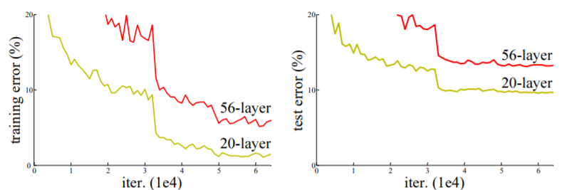

概述
AlexNet将卷积神经网络带入CV领域，VGG和GoogLeNet致力于加深卷积神经网络来提升模型的表现力，而当网络达到一定深度后，研究者们发现一味地加深并不能继续提升效果，反而会使得模型收敛困难，而且表现并不如浅层网络。下图是在CIFAR-10上分别训练20层和56层卷积神经网络地结果，无论在训练集还是测试集，更深的56层反而比20层表现更差，我们称之为网络退化，ResNet主要是为了解决这个问题被提出。

ResNet提出于2015年，深度最大达到了前所未有的152层，一举获得了当年ILSVRC分类竞赛的冠军，达到了Top-5 3.57%的错误率。以ResNet为基础，何凯明团队还获取了当年的ILSVRC定位任务冠军和检测任务冠军，以及COCO数据集上的检测任务冠军和分割任务冠军。
论文：Deep Residual Learning for Image Recognition
代码实现：ResNet50
网络详解
Shortcut Connection
前面说过，同样的数据集上，56层的效果反而不如20层，说明多出来的36层不能进行恒等变换（即多个非线性变换的叠加不能近似于恒等变换），因此，我们需要提供这个恒等变换的可能，来防止网络退化的情况。
上图所示为残差块的基本结构，在极端的情况下，需要恒等变换，这种结构会比多个非线性变换叠加更加容易拟合恒等映射。从另一个角度来看，由于“快捷连接”的存在，深层的特征图一定比浅层的特征图具有更加丰富的信息。按直觉来说relu放在相加前更容易拟合恒等变换（将参数全部置零即可），但是在这里却将relu放在了相加后，关于relu的位置问题在2016年ResNet v2的论文Identity Mappings in Deep Residual Networks中会有相关讨论。
残差块
基于上述思想，作者给出了两种残差块的设计，如下图所示。如今特征提取常用的ResNet50和ResNet101都是用了下图右的结构，其中1×1卷积主要是为了降维和升维，以此减少计算量，因为中间的通道数小于两边的通道数，这种结构又被成为“瓶颈”结构。
ResNet
将上述两种结构进行堆叠，就得到了ResNet，其中conv3_1，conv4_1，conv5_1的卷积步长为2，进行降采样，降采样的细节下面会介绍。具体参数如下表。
ResNet50的实现
ZERO PAD
在网上许多博客与实现代码中，整个网络只有唯一的零填充（在上图的最开始位置），但在keras.application中的ResNet50，会在最大池化层之前加一层零填充，即stage 1的结构为：卷积-BN-ReLU-零填充-最大池化，不过这个无关紧要，加不加都可以。
残差块
残差块的具体实现有下面两种形式：
下面给出两种残差块中卷积层的具体参数：
| Identity Block | Convolutional Block | |
|---|---|---|
| 1×1 | strides: (1, 1), padding: valid | strides: (2, 2), padding: valid |
| 3×3 | strides: (1, 1), padding: same | strides: (1, 1), padding: same |
| 1×1 | strides: (1, 1), padding: valid | strides: (1, 1), padding: valid |
| shortcut | / | kernel_size: (1, 1) strides(2, 2) padding: valid |
AVG POOL
最后的AVG POOL是全局平均池化层，其实现代码为：
1 | x = Lambda(lambda y: K.mean(y,axis=[1,2]),name='avgpool')(x) # import keras.backend as K |
达到的效果是将每一个特征图转换为一个值，如(7, 7, 2048)的特征图，经过全局平均池化层后就会变成(2048,)，后面不需要Flatten，直接与全连接层相连。
使用预训练
keras提供的预训练模型与自己写的模型结构不一定完全匹配，所以想要加载预训练模型最快捷的方式就是寻找出含有可训练参数的层，按照keras.applications.ResNet50的规范给它们命名，并在加载参数的时候执行下面的语句：
1 | model.load_weights('resnet50.h5', by_name=True) # 加载同名层的参数，其他层不加载 |
ResNet50中含有可训练参数的层为所有卷积层和所有BN层。